library(ggpubr)
library(lattice)
library(mFilter)
library(tidyverse)
library(parallel)
library(doFuture)
library(doRNG)
library(tseries)
source("./R/eossa_new.R")Статистический анализ временных рядов
Подключаем необходимые библиотеки:
1 Периодограмма и автокорреляционная функция
periodogram <- function(x) {
spec.pgram(
x,
taper = 0,
fast = FALSE,
detrend = FALSE,
plot = FALSE,
na.action = na.contiguous
)
}
ggperiodogram <- function(x, points = FALSE) {
sp <- periodogram(x)
spData <- data.frame(frequency = sp$freq, spectrum = sp$spec)
p <- ggplot(spData, aes(x = frequency, y = spectrum)) +
geom_line(na.rm = TRUE)
if (points)
p <- p + geom_point(na.rm = TRUE)
p
}em_harmonic <- function(N, freq, A = 1, a = 0, phase = 0) {
A * exp(a * (1:N)) * cos(2 * pi * (1:N) * freq + phase)
}1.1 Искусственные данные
Случай, когда частота попадает в решетку периодограммы:
N <- 100
ggtsdisplay(em_harmonic(N, 0.25))Когда частота не попадает, наблюдается эффект растекания частоты:
ggtsdisplay(em_harmonic(N, 0.255))Белый шум:
set.seed(1234)
rnorm(N) |> ggtsdisplay()Красный шум:
set.seed(1234)
phi <- 0.7
rn_start <- rnorm(1, sd = 1 / sqrt(1 - phi^2))
arima.sim(list(ar = phi), N, n.start = 1, start.innov = rn_start) |>
ggtsdisplay()При увеличении длины ряда значение периодограммы в частоте, соответствующей гармонике, увеличивается, а в частотах, соответствующих шуму, остаются теми же.
set.seed(1234)
N <- 200
cos4 <- em_harmonic(N, 0.25)
wn <- rnorm(N)
per1 <- ggperiodogram(head(wn + cos4, 100))
per2 <- ggperiodogram(wn + cos4)
ggarrange(per1 + ylim(0, max(per2$data$spectrum)), per2, nrow = 2)set.seed(1234)
rn_start <- rnorm(1, sd = 1 / sqrt(1 - phi^2))
rn <- arima.sim(list(ar = phi), N, n.start = 1, start.innov = rn_start)
per1 <- ggperiodogram(head(rn + cos4, 100))
per2 <- ggperiodogram(rn + cos4)
ggarrange(per1 + ylim(0, max(per2$data$spectrum)), per2, nrow = 2)
1.2 Реальные данные
1.2.1 Яркость определенной звезды в полночь
data("star", package = "astsa")
ggtsdisplay(star)per <- ggperiodogram(star)
per$data$frequency[order(per$data$spectrum, decreasing = TRUE)[1:2]]## [1] 0.03500000 0.04166667На периодограмме есть два заметных пика. Эти пики приходятся на частоты \(\omega_1=21/600 = 0.035\) и \(\omega_2=25/600\approx0.04167\). Эти частоты соответствуют периодам \(600/21\approx28.57\) и \(24\) дня соответственно.
1.2.2 Использование розничных дебетовых карт в Исландии
data("debitcards", package = "fpp")
autoplot(debitcards)Похоже, что модель не аддитивная, прологарифмируем ее:
debit_log <- log(debitcards)
ggtsdisplay(debit_log)Стало лучше. В ряде, очевидно, присутствует тренд. Удалим линейный тренд и построим периодограмму заного.
debit_detrended <- tslm(debit_log ~ trend)$resid
ggtsdisplay(debit_detrended)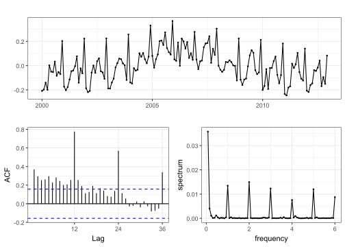
По виду остатков видно, что у ряда нелинейный тренд.
1.2.3 Ежегодный минимальный уровень воды реки Нил
data("NileMin", package = "longmemo")
ggtsdisplay(NileMin)2 Линейные фильтры
2.1 АЧХ
Построим амплитудно-частотную характеристику (АЧХ) для некотопых фильтров.
afc <- function(filter, freq, plot = TRUE, ...) {
k <- seq_along(filter) - 1
h <- function(o) sum(rev(filter) * exp(-2i * pi * k * o))
res <- list(freq = freq, afc = abs(sapply(freq, h)))
if (plot) {
plot(res$afc ~ res$freq, type = "l", xlab = "frequency", ylab = "AFC", ...)
invisible(res)
} else res
}Скользащее среднее:
filt_ma <- rep(1, 12)
freq <- seq(0, 0.5, 0.001)
afc(filt_ma, freq)Последовательная разность:
filt_diff <- c(-1, 1)
afc(filt_diff, freq)Сезонная разность:
filt_diff12 <- c(1, rep(0, 11), -1)
afc(filt_diff12, freq)2.2 Искусственные данные
Применим сезонную разность. Периодограмма до применения фильтра:
set.seed(1234)
seasonality <- mapply(em_harmonic, N, c(1, 2) / 12, c(1.5, 1)) |> rowSums()
x1 <- ts(seasonality + wn, frequency = 12)
ggperiodogram(x1)После применения фильтра видно, что значение периодограммы в точках, соответствующих периодам 12, 6, 4, 3, 2.4, 2 примерно нулевое.
x1_deseason <- stats::filter(x1, filt_diff12)
ggperiodogram(x1_deseason)Теперь рассмотрим ряд с экспоненциальным трендом и выделим его с помощью скользящего среднего:
trend <- em_harmonic(N, 0, 5, 1 / N)
x2 <- ts(trend + wn)
xyplot(
cbind(x2, trend),
superpose = TRUE,
lwd = c(1, 2),
auto.key = list(text = c("Original", "Trend"), space = "top")
)x2_ma <- ts_filter(x2, c(0.5, rep(1, 19), 0.5) / 20, 2, "renormalize")
x2_resid <- x2 - x2_ma
xyplot(
cbind(x2, trend, x2_ma),
superpose = TRUE,
col = c("grey", "red", "blue"),
lwd = c(1, 2, 2),
auto.key = list(text = c("Original", "Trend", "Moving average"), space = "top")
)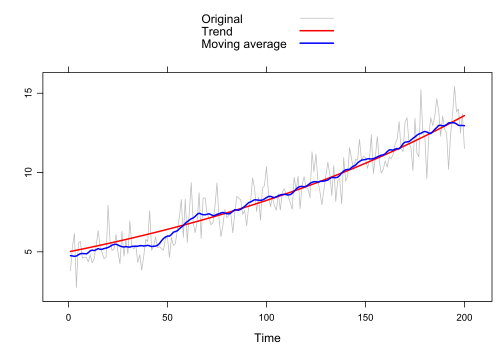
Периодограмма остатков:
ggperiodogram(x2_resid)Оценим спектральную плотность с помощью скользащего среднего. Белый шум:
spec_wn <- ggperiodogram(wn)
spec_wn_ma <- ts_filter(
spec_wn$data$spectrum,
c(0.5, rep(1, 99), 0.5) / 100,
sides = 2,
boundary = "renormalize"
)
spec_wn + geom_line(aes(x = frequency, y = spec_wn_ma), colour = "blue")Красный шум:
spec_rn <- ggperiodogram(rn)
spec_rn_ma <- ts_filter(
spec_rn$data$spec,
c(0.5, rep(1, 49), 0.5) / 50,
sides = 2,
boundary = "renormalize"
)
spec_rn + geom_line(aes(x = frequency, y = spec_rn_ma), colour = "blue")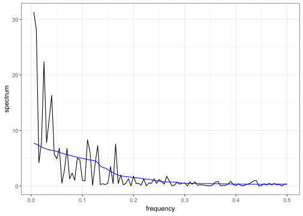
2.3 Реальные данные
2.3.1 Звездная величина
С помощью сезонной разности выделим гармоники с периодами 29 и 24.
star24 <- stats::filter(star, c(1, rep(0, 28), -1))
star29 <- stats::filter(star, c(1, rep(0, 23), -1))
ggarrange(autoplot(star24), autoplot(star29), nrow = 2)Периодограммы остатков.
per1 <- ggperiodogram(star24) + xlim(0.02, 0.06)
per2 <- ggperiodogram(star29) + xlim(0.02, 0.06)
ggarrange(per1, per2, nrow = 2)2.3.2 Дебетовые карты
Выделим тренд с помощью скользащего среднего.
debit_ma <- ts_filter(debit_log, c(0.5, rep(1, 23), 0.5) / 24, 2, "renormalize")
xyplot(
cbind(debit_log, debit_ma),
superpose = TRUE,
lwd = c(1, 2),
auto.key = list(text = c("Original", "Moving average"), space = "top")
)
Остатки:
debit_detrend <- debit_log - debit_ma
ggtsdisplay(debit_detrend)В целом, тренд выделился хорошо. Теперь удалим сезонность и посмотрим на остатки:
debit_resid <- stats::filter(debit_detrend, c(1, rep(0, 11), -1))
ggtsdisplay(debit_resid)## Warning: Removed 12 rows containing missing values or values outside the scale range
## (`geom_point()`).2.3.3 Уровень воды реки Нил
Оценим тренд скользащим средним.
data("NileMin")## Warning in data("NileMin"): данные 'NileMin' не найденыNileMin_ma <- ts_filter(NileMin, c(0.5, rep(1, 99), 0.5) / 100, 2, "renormalize")
xyplot(
cbind(NileMin, NileMin_ma),
superpose = TRUE,
lwd = c(1, 2),
auto.key = list(text = c("Original", "Moving average"), space = "top")
)Получился довольно неровный тренд.
3 SSA
3.1 Ранг
Ранг гармоники с частотой \(\omega\ne0.5\) равен \(2\).
N <- 71
L <- 24
x <- em_harmonic(N, 1 / 12)
s <- ssa(x, L)
plot(s)
plot(s, "vectors")Ранг гармоники с частотой \(0.5\) равен \(1\).
x <- em_harmonic(N, 0.5)
s <- ssa(x, L)
plot(s)plot(s, "vectors")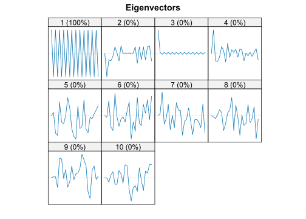
Ранг полинома степени \(p\) равен \(p+1\).
x <- (1:N) + (1:N)^2 + 1
s <- ssa(x, L)
plot(s)plot(s, "vectors")3.2 Разделимость
Сумма гармоник с разными амплитудами и частотами сильно разделима.
A <- c(2, 1, 0.5, 0.2)
freq <- c(1, 2, 3, 5) / 12
x <- mapply(em_harmonic, N, freq, A) |> rowSums()
s <- ssa(x, L)plot(s, "vectors")По двумерному графику левых сингулярных векторов можно заметить, что соответствующие целому периоду \(T\) компоненты образовывают вершины правильного \(T\)-угольника (периоды \(12\), \(6\) и \(4\)), а компоненты, соответствующие периоду вида \(p/q\) с взаимно простыми целыми \(p\) и \(q\), образуют вершины правильного \(p\)-угольника (период \(12/5=2.4\))
plot(s, "paired", idx = c(1, 3, 5, 7))plot(
reconstruct(s, list(S12 = 1:2, S6 = 3:4, S4 = 5:6, S2.4 = 7:8)),
plot.method = "xyplot"
)Сумма гармоник с разными частотами, но одинаковыми амплитудами слабо разделима, но не разделима по вкладам.
x <- mapply(em_harmonic, N, freq[1:2]) |> rowSums()
s <- ssa(x, L)
plot(s, "vectors", idx = 1:4)Левые сингулярные векторы смешались друг с другом. Это также видно по матрице \(W\)-корреляций:
plot(wcor(s, 1:4))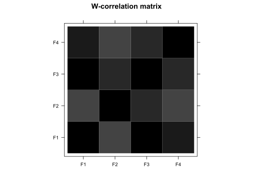
Разделимости нет в случае суммы константы и экспоненты:
x <- ts(em_harmonic(N, 0, a = 0.02) + 10)
s <- ssa(x, L)
plot(s)Видно, что разделимость по вкладу есть. Посмотрим на восстановленные компоненты:
plot(
reconstruct(s, list(1, 2)),
plot.method = "xyplot",
superpose = TRUE,
add.residuals = FALSE,
auto.key = list(space = "top")
)Константа явно не отделилась от экспоненты.
3.3 Искусственные данные
s_x1 <- ssa(x1)
plot(s_x1, "paired")Выбираем первые \(4\) компоненты.
r_s1 <- reconstruct(s_x1, list(S12 = 1:2, S6 = 3:4))
plot(r_s1, plot.method = "xyplot")s_x2 <- ssa(x2)
plot(s_x2, "vectors")Убеждаемся, что ранг экспоненциального тренда равен \(1\), выделим первую компоненту.
r_x2 <- reconstruct(s_x2, list(Trend = 1))
plot(
r_x2,
plot.method = "xyplot",
superpose = TRUE,
lwd = c(1, 2, 1),
auto.key = list(space = "top")
)3.4 Реальные данные
3.4.1 Звездная величина
s_star <- ssa(star)
plot(s_star, "vectors")plot(s_star, "paired")Судя по двумерным графикам, компоненты \(2\) и \(3\), \(4\) и \(5\), \(7\) и \(8\) соответствуют гармоникам. Компоненты \(7\) и \(8\) соответствуют периоду \(4\), а период остальных гармоник оценить визуально затруднительно, поэтому воспользуемся parestimate.
parestimate(s_star, list(2:3, 4:5, 7:8))## $F1
## period rate | Mod Arg | Re Im
## 28.800 -0.000016 | 0.99998 0.22 | 0.97628 0.21644
## -28.800 -0.000016 | 0.99998 -0.22 | 0.97628 -0.21644
##
## $F2
## period rate | Mod Arg | Re Im
## 24.152 -0.000027 | 0.99997 0.26 | 0.96632 0.25722
## -24.152 -0.000027 | 0.99997 -0.26 | 0.96632 -0.25722
##
## $F3
## period rate | Mod Arg | Re Im
## 4.005 -0.001537 | 0.99846 1.57 | 0.00186 0.99846
## -4.005 -0.001537 | 0.99846 -1.57 | 0.00186 -0.99846Получили, что компоненты \(2\) и \(3\) соответствуют периоду \(29\), а \(4\) и \(5\) — периоду \(24\). Также убедились, что период компонент \(7\) и \(8\), действительно, равен \(4\). Также интересен период шестой компоненты, построим ее периодограмму:
ggperiodogram(s_star$U[, 6])Периодограмма имеет единственный пик в \(\omega=0.5\), значит \(6\)-я компонента соответствует гармонике с периодом \(2\).
r_star <- reconstruct(s_star, groups = list(S29 = 2:3, S24 = 4:5, S2 = 6, S4 = 7:8))
plot(r_star, plot.method = "xyplot")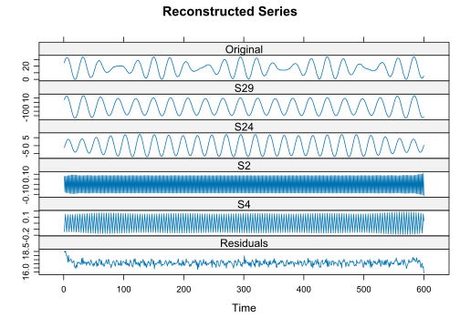
3.4.2 Дебетовые карты
Возьмем длину окна, кратной всем периодам сезонности (т.е. \(12\), \(6\), \(4\), \(3\), \(2.4\) и \(2\)).
s_debit <- ssa(debit_log, 72)
plot(s_debit, "vectors", idx = 1:20)
Похоже, тренду соответствуют компоненты \(1\), \(2\) и \(5\). Но видно, что \(5\)-я компонента смешалась с гармоникой. Посмотрим на матрицу \(W-корреляций\):
plot(wcor(s_debit, 1:25))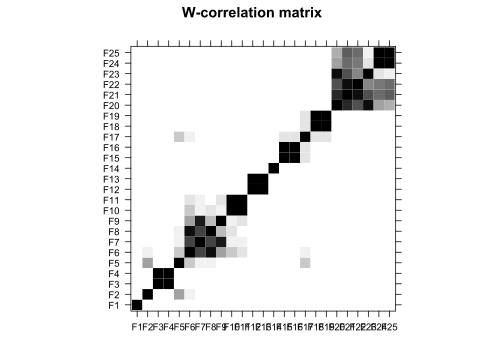
Действительно, компоненты с \(6\) по \(11\) смешались друг с другом, \(5\)-я компонента смешалась вместе с ними. Также заметим, что \(5\)-я компонента коррелирует с компонентами \(2\) и \(17\), поэтому будем считать, что компоненты \(1\), \(2\) \(5\) и \(17\) соответствуют тренду.
parestimate(s_debit, list(3:4, 10:11, 12:13, 14))## $F1
## period rate | Mod Arg | Re Im
## 6.055 -0.021244 | 0.97898 1.04 | 0.49755 0.84312
## -6.055 -0.021244 | 0.97898 -1.04 | 0.49755 -0.84312
##
## $F2
## period rate | Mod Arg | Re Im
## 4.037 -0.114560 | 0.89176 1.56 | 0.01297 0.89166
## -4.037 -0.114560 | 0.89176 -1.56 | 0.01297 -0.89166
##
## $F3
## period rate | Mod Arg | Re Im
## 2.994 -0.012886 | 0.98720 2.10 | -0.49747 0.85269
## -2.994 -0.012886 | 0.98720 -2.10 | -0.49747 -0.85269
##
## $F4
## period rate | Mod Arg | Re Im
## 2.000 -0.013771 | 0.98632 3.14 | -0.98632 0.00000Комопоненты \(3\) и \(4\), \(10\) и \(11\), \(12\) и \(13\), и \(14\) соответствуют гармоникам с периодами \(6\), \(4\), \(3\) и \(2\) соответственно. Поскольку комопонент сезонности всего \(2 \cdot 5 + 1=11\), возьмем компоненты \(3\), \(4\) и с \(6\) по \(14\).
r_debit <- reconstruct(s_debit, list(Trend = c(1:2, 5, 17), Seasonality = c(3:4, 6:14)))
plot(r_debit, plot.method = "xyplot")Взглянем на периодограмму остатков:
ggperiodogram(resid(r_debit))Как видим, сезонность успешно удалена.
Сравним полученный с помощью SSA тренд с трендом, полученным с помощью скользащего среднего ранее.
xyplot(
cbind(debit_log, r_debit$Trend, debit_ma),
superpose = TRUE,
col = c("grey", "red", "blue"),
lwd = c(1, 2, 2),
auto.key = list(text = c("Original", "SSA", "Moving average"), space = "top")
)Получили примерно тоже самое, но у SSA получился более точный тренд на концах.
3.4.3 Уровень реки Нил
s_NileMin <- ssa(NileMin)
plot(s_NileMin, "vectors")Компоненты \(2\) и \(3\) соответствуют гармонике с некоторым периодом. Оценим его:
parestimate(s_NileMin, list(2:3))## period rate | Mod Arg | Re Im
## 237.862 0.000346 | 1.00035 0.03 | 1.00000 0.02642
## -237.862 0.000346 | 1.00035 -0.03 | 1.00000 -0.02642Период гармоники составлят примерно \(238\) лет. Это достаточно большой период, поэтому включим компоненты \(2\) и \(3\) в тренд вместе с компонентой \(1\).
r_NileMin <- reconstruct(s_NileMin, list(Trend = 1:3))
plot(
r_NileMin,
plot.method = "xyplot",
superpose = TRUE,
lwd = c(1, 2, 1),
auto.key = list(space = "top")
)Стравним полученный тренд со скользащим средним.
xyplot(
cbind(NileMin, r_NileMin$Trend, NileMin_ma),
superpose = TRUE,
col = c("grey", "red", "blue"),
lwd = c(1, 2, 2),
auto.key = list(text = c("Original", "SSA", "Moving average"), space = "top")
)У SSA получился более плавный тренд.
4 Полиномиальная регрессия
Оценим тренд реальных данных с помощью полиномиальной регрессии.
N <- length(debit_log)
debit_poly1 <- tslm(debit_log ~ poly(1:N, 1))
debit_poly2 <- tslm(debit_log ~ poly(1:N, 2))
debit_poly3 <- tslm(debit_log ~ poly(1:N, 5))
xyplot(
cbind(debit_log, fitted(debit_poly1), fitted(debit_poly2), fitted(debit_poly3)),
superpose = TRUE,
col = c("grey", "red", "blue", "orange"),
lwd = c(1, 2, 2, 2),
auto.key = list(
text = c("Original", "lm", "poly(degree = 2)", "poly(degree = 3)"),
space = "top"
)
)Полином степени \(3\) уже хорошо аппроксимирует данные.
N <- length(NileMin)
NileMin_poly5 <- tslm(NileMin ~ poly(1:N, 5))
NileMin_poly10 <- tslm(NileMin ~ poly(1:N, 10))
NileMin_poly15 <- tslm(NileMin ~ poly(1:N, 15))
xyplot(
cbind(NileMin, fitted(NileMin_poly5), fitted(NileMin_poly10), fitted(NileMin_poly15)),
superpose = TRUE,
col = c("grey", "red", "blue", "orange"),
lwd = c(1, 2, 2, 2),
auto.key = list(
text = c("Original", "poly(degree = 5)", "poly(degree = 10)", "poly(degree = 15)"),
space = "top"
)
)Тут, похоже, подходит \(10\) степень полинома.
5 Мультипликативная модель
Сгенерируем ряд, удовлетворяющий мультипликативной модели: \[ \mathsf{X}=\mathsf{T}(1 + \mathsf{S})(1 + \mathsf{N}). \]
N <- 200
trend_mult <- (1:N)^2 + 2 * (1:N) + 1
x_mult <- ts(trend_mult * (1 + 0.5 * seasonality) * (1 + 0.25 * wn))
xyplot(x_mult, main = "Multiplicative model")Оценим тренд полиномиальной регрессией.
lm_mult <- tslm(x_mult ~ poly(1:N, 2))
ci_mult <- predict(lm_mult, data.frame(1:N), interval = "confidence")
xyplot(
cbind(x_mult, ci_mult),
superpose = TRUE,
col = c("gray", "red", "blue", "blue"),
lty = c(1, 1, 2, 2),
auto.key = list(
text = c("Original", "Regression line", "95% confidence interval"),
space = "top"
)
)Теперь прологарифмируем ряд и оценим тренд.
lm_add <- tslm(log(x_mult) ~ poly(1:N, 5))
ci_add <- predict(lm_add, data.frame(1:N), interval = "confidence")
xyplot(
cbind(log(x_mult), ci_add),
superpose = TRUE,
col = c("gray", "red", "blue", "blue"),
lty = c(1, 1, 2, 2),
auto.key = list(
text = c("ln(Original)", "Regression line", "95% confidence interval"),
space = "top"
)
)6 Огибающая
Модель: \[ x_n=A(n)\cos(2\pi\omega n). \]
N <- 200
cos10 <- em_harmonic(N, 0.1)
envelope <- em_harmonic(N, 0.004)
x_envelope <- ts(envelope * cos10)
xyplot(x_envelope)Оценим огибающую \(A(n)\). Возведем ряд в квадрат и домножим на \(2\): \[ y_n = 2x_n^2=2 A(n)\cos^2(2\pi n/10)=A^2(n) + A^2(n)\cos(2 \pi n / 10). \]
y_envelope <- 2 * x_envelope^2
xyplot(y_envelope)Осталось только выделить тренд у полученного ряда.
s_envelope <- ssa(y_envelope)
plot(s_envelope, "vectors")В нашем случае ранг \(A^2(n)=\cos^2(2 \pi n / 500)\) равен 3.
r_envelope <- reconstruct(s_envelope, list(Envelope = c(1, 4:5)))
xyplot(
cbind(x_envelope, sqrt(r_envelope$Envelope)),
superpose = TRUE,
lwd = c(1, 2),
auto.key = list(text = c("Original", "Envelope"), space = "top"),
)7 Гетероскедастичный шум
Построим доверительный интервал гетероскедастичного шума, задающегося формулой \[ \mathsf{X}=\sigma(n)\varepsilon_n, \] где \(\sigma(n)\) — медленно меняющаяся функция, \(\varepsilon_n\) — белый гауссовский шум.
Пусть дисперсия шума меняется линейно:
set.seed(123)
x <- ts((1:N) * wn)
xyplot(x)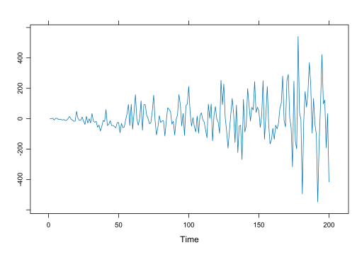
Возведем его в квадрат:
y <- x^2
xyplot(y)Выделим тренд:
s <- ssa(y)
plot(s, "vectors")r <- reconstruct(s, list(Trend = 1))
plot(r, plot.method = "xyplot", lwd = c(1, 2), superpose = TRUE, add.residuals = FALSE)Построим доверительный интервал \(\pm2\sqrt{\hat\sigma^2(n)}\):
xyplot(
cbind(x, 2 * sqrt(r$Trend), -2 * sqrt(r$Trend)),
superpose = TRUE,
col = c("#0072B2", "#E69F00", "#E69F00"),
lwd = c(1, 2, 2),
lty = c(1, 2, 2),
auto.key = list(text = c("Original", "Confidence interval"), space = "top")
)8 LOESS и фильтр Hodrick-Prescott
hp_debit <- hpfilter(debit_log, 100 * 12^2)
loess_debit <- loess(debit_log ~ time(debit_log), span = 0.3, degree = 1, family = "gaussian")
xyplot(
cbind(debit_log, hp_debit$trend, loess_debit$fitted),
superpose = TRUE,
col = c("grey", "red", "blue"),
lwd = c(1, 2, 2),
auto.key = list(text = c("Original", "HP filter", "LOESS"))
)hp_NileMin <- hpfilter(NileMin, 1e+5)
loess_NileMin <- loess(NileMin ~ time(NileMin), span = 0.15, degree = 1, family = "gaussian")
xyplot(
cbind(NileMin, hp_NileMin$trend, loess_NileMin$fitted),
superpose = TRUE,
col = c("grey", "red", "blue"),
lwd = c(1, 2, 2),
auto.key = list(text = c("Original", "HP filter", "LOESS"))
)Для обоих рядов получили примерно одинаковые тренды, однако у фильтра HP получилась более плавная кривая.
9 Преобразование Бокса-Кокса
Применим преобразование на нелогарифмированных данных о использовании дебетовых картах.
(lambda_debit <- BoxCox.lambda(debitcards))## [1] 0.2292876Значение \(\lambda\) ближе к \(0\), чем к \(1\), что говорит о мультипликативности модели. После применения преобразования видна стабилизация дисперсии ряда:
debit_transformed <- BoxCox(debitcards, lambda_debit)
ggarrange(
autoplot(debitcards, main = "Original"),
autoplot(debit_transformed, main = "Transformed"),
nrow = 2
)10 SSA с процекцией
Известно, что линейный тренд неотделим от косинуса.
N <- 71
x <- (1:N) + em_harmonic(N, freq[1], 10)
s <- ssa(x, L)
plot(s, "vectors")Видно, что \(2\)-я компонента смешалась с \(4\)-й. С помощью SSA с проекцией можно добиться разделимости.
s_proj <- ssa(x, L, column.projector = 1, row.projector = 1)
plot(s_proj, "vectors")plot(wcor(s_proj, 1:4))Действительно, теперь \(1\) и \(2\) компоненты соответствуют тренду, а \(3\) и \(4\) — гармонике.
plot(
reconstruct(s_proj, list(Trend = 1:2, Harmonic = 3:4)),
plot.method = "xyplot",
superpose = TRUE,
add.residuals = FALSE
)11 Автоматическая группировка в SSA
С помощью grouping.auto автоматически выделим тренд и сезонную составляющую:
delta <- 1 / length(debit_log)
freq.bins <- lapply(1:6 / 12, function(freq) freq + c(-delta, delta))
freq.bins[[7]] <- 0.02
names(freq.bins) <- c(paste0("S", 1:6), "Trend")
(g_debit <- grouping.auto(s_debit, freq.bins = freq.bins, threshold = 0.5))## $S1
## [1] 6 8
##
## $S2
## [1] 3 4
##
## $S3
## [1] 10 11
##
## $S4
## [1] 12 13
##
## $S5
## [1] 7 9
##
## $S6
## [1] 14
##
## $Trend
## [1] 1 2 5 17
##
## attr(,"contributions")
## S1 S2 S3 S4 S5
## 1 7.149622e-06 1.821456e-06 9.008490e-07 5.940891e-07 2.363522e-07
## 2 4.312357e-04 1.368391e-04 6.421864e-05 4.189780e-05 1.824973e-05
## 3 2.241320e-03 8.882264e-01 6.425917e-03 1.299284e-03 1.081760e-03
## 4 2.396542e-03 9.547177e-01 4.537458e-05 2.347889e-05 1.110694e-05
## 5 2.764348e-03 5.651100e-04 8.309096e-04 9.924169e-05 7.917659e-04
## 6 7.056205e-01 2.510368e-03 1.686964e-02 1.545543e-03 8.210470e-02
## 7 2.571305e-01 8.893333e-04 1.041260e-03 1.735583e-03 6.673560e-01
## 8 8.972495e-01 2.133772e-04 1.944357e-04 8.195927e-04 4.286309e-02
## 9 2.181521e-03 1.133496e-05 2.786337e-03 4.067093e-04 9.557750e-01
## 10 8.394401e-03 4.632515e-04 9.732723e-01 2.130526e-04 2.614842e-04
## 11 2.888588e-04 4.138370e-04 9.686669e-01 2.009613e-04 2.549267e-03
## 12 1.019390e-05 2.999839e-05 9.539865e-05 9.788045e-01 4.724084e-04
## 13 2.092217e-06 2.645405e-06 8.390179e-06 9.408327e-01 9.084307e-04
## 14 4.260160e-06 7.028858e-06 1.365645e-05 1.511507e-05 1.640263e-04
## 15 9.738300e-03 2.119155e-03 1.338379e-03 1.082818e-03 3.810082e-04
## 16 1.592273e-03 3.361190e-04 1.989521e-04 1.620805e-04 8.019018e-05
## 17 7.696486e-03 1.329773e-03 7.495252e-04 5.994922e-04 1.521027e-04
## 18 4.345200e-05 2.246338e-04 9.272279e-04 1.340431e-02 2.382073e-03
## 19 1.853304e-05 8.046677e-05 4.961840e-04 1.656925e-02 4.739046e-04
## 20 5.464169e-03 4.380240e-03 1.007958e-02 1.019492e-03 3.163324e-03
## 21 2.970425e-04 1.601539e-04 1.475821e-02 3.111173e-03 5.405492e-03
## 22 1.124084e-02 4.424772e-04 4.905902e-03 2.282761e-04 1.212316e-03
## 23 1.070747e-03 7.293054e-05 1.914292e-03 5.937953e-06 5.530199e-03
## 24 4.166982e-03 4.144674e-05 7.257682e-03 5.986244e-05 2.037900e-04
## 25 7.234977e-05 2.257355e-04 1.306115e-02 1.252302e-04 1.609947e-05
## 26 2.471497e-01 3.190345e-05 3.392664e-03 3.761885e-05 7.998607e-05
## 27 2.972322e-01 7.931684e-06 4.982919e-06 2.083372e-07 7.945798e-07
## 28 7.948088e-03 5.650432e-05 1.157688e-05 1.342109e-06 1.067147e-07
## 29 3.283792e-03 2.668129e-03 4.644679e-03 9.823175e-04 5.209258e-04
## 30 3.675527e-04 1.086959e-03 2.562483e-03 4.134343e-03 7.722356e-04
## 31 1.031900e-05 3.411402e-05 9.531044e-05 2.813866e-04 6.542379e-04
## 32 2.720299e-02 2.165703e-03 2.146714e-04 4.308365e-04 1.867583e-04
## 33 6.916222e-04 2.645218e-03 6.320776e-02 1.145383e-03 1.182927e-04
## 34 1.358486e-04 2.846813e-04 4.818252e-02 2.024304e-02 2.148039e-03
## 35 3.489515e-03 3.119402e-03 9.711101e-03 1.021659e-02 1.801685e-02
## 36 8.913114e-03 1.947669e-03 6.850682e-05 1.418346e-05 5.984207e-05
## 37 4.076253e-03 1.023745e-02 2.742390e-03 1.585293e-04 1.390309e-05
## 38 9.569730e-05 2.780978e-03 6.478664e-02 9.604557e-03 2.558894e-02
## 39 2.096699e-04 3.183490e-04 2.994309e-02 3.919032e-04 9.373166e-04
## 40 1.883157e-04 2.329456e-04 2.236637e-03 8.951887e-04 1.440730e-02
## 41 9.862472e-05 4.851757e-05 4.552388e-02 4.661586e-03 2.931628e-03
## 42 1.268427e-05 5.230213e-06 4.871418e-03 9.188555e-04 6.921079e-04
## 43 2.432670e-03 1.140142e-03 3.265860e-03 1.431290e-03 1.486685e-03
## 44 1.762254e-07 1.974953e-07 1.691797e-06 2.684211e-06 6.049456e-04
## 45 2.923690e-04 4.576097e-04 4.463688e-04 1.202487e-03 7.743538e-04
## 46 3.400577e-04 6.971703e-04 1.917266e-03 3.002776e-02 2.609915e-04
## 47 6.457895e-08 2.673937e-06 4.437733e-05 5.091804e-03 3.136667e-03
## 48 1.710450e-04 9.056578e-05 8.037186e-04 4.982618e-04 5.828874e-04
## 49 1.440022e-04 2.557067e-03 3.084562e-04 1.360360e-04 3.059800e-05
## 50 2.964151e-02 1.471053e-02 1.552038e-04 4.081738e-04 2.324617e-04
## S6 Trend
## 1 1.104922e-07 9.998474e-01
## 2 8.131190e-06 9.952863e-01
## 3 2.408815e-04 7.169490e-03
## 4 5.267242e-06 1.641197e-03
## 5 2.313542e-05 9.850747e-01
## 6 1.070708e-03 2.798187e-02
## 7 8.531243e-04 8.686916e-05
## 8 4.531191e-06 4.558453e-03
## 9 1.151931e-03 4.206433e-05
## 10 2.830878e-06 4.606930e-05
## 11 2.521141e-04 3.094682e-04
## 12 1.039160e-03 1.909300e-05
## 13 4.885889e-04 3.240515e-06
## 14 9.574540e-01 7.018776e-06
## 15 1.759021e-04 5.403263e-02
## 16 3.213332e-05 2.564069e-03
## 17 3.590573e-05 7.228231e-01
## 18 6.470086e-04 8.388715e-04
## 19 1.347715e-04 2.049923e-03
## 20 3.461663e-03 4.327324e-03
## 21 2.898924e-04 2.486823e-05
## 22 5.045932e-05 6.993849e-04
## 23 1.182260e-03 1.809331e-05
## 24 1.460453e-06 6.818420e-07
## 25 7.568365e-07 8.574191e-06
## 26 7.922787e-06 2.158568e-05
## 27 2.295415e-07 1.556270e-05
## 28 1.984921e-07 9.781728e-05
## 29 3.023559e-04 2.378838e-04
## 30 1.640998e-04 4.341431e-04
## 31 2.650487e-04 4.782942e-06
## 32 1.078032e-04 5.038004e-02
## 33 1.140459e-04 8.444745e-04
## 34 7.572012e-04 1.332102e-03
## 35 1.925975e-03 8.226331e-03
## 36 6.240810e-04 2.886059e-03
## 37 8.246203e-06 7.097291e-04
## 38 9.540568e-04 2.063156e-05
## 39 6.424187e-04 4.721496e-04
## 40 6.525577e-03 2.017577e-04
## 41 4.081911e-03 1.079151e-05
## 42 5.294582e-04 8.199733e-06
## 43 3.723905e-04 3.721040e-03
## 44 2.098784e-02 2.178011e-07
## 45 3.507453e-04 6.455669e-04
## 46 1.091058e-04 3.481847e-04
## 47 1.441011e-05 1.700517e-08
## 48 3.171320e-05 1.351277e-04
## 49 2.416530e-05 7.042003e-05
## 50 1.290499e-04 1.819525e-02
## attr(,"type")
## [1] "independent"
## attr(,"threshold")
## [1] 0.5 0.5 0.5 0.5 0.5 0.5 0.5
## attr(,"class")
## [1] "grouping.auto.pgram"plot(reconstruct(s_debit, g_debit), add.residuals = FALSE, plot.method = "xyplot")12 DerivSSA
Воспользуемся fossa, чтобы улучшить разделимость гармонических компонент. Ряд с огибающей:
xyplot(x_envelope)
plot(s_envelope, "vectors")
plot(wcor(s_envelope, 1:10))\(4\)-я компонента смешалась со \(2\)-й \(3\)-й. Применяем fossa:
fs_envelope <- fossa(s_envelope, 1:9)
plot(fs_envelope, "vectors")plot(wcor(fs_envelope, 1:10))
rfs_envelope <- reconstruct(fs_envelope, list(Envelope = c(7:9)))
xyplot(
cbind(x_envelope, sqrt(r_envelope$Envelope), sqrt(rfs_envelope$Envelope)),
superpose = TRUE,
lwd = c(1, 2, 2),
auto.key = list(text = c("Original", "Basic SSA", "DerivSSA"), space = "top")
)Получили практически идеальную огибающую.
Теперь перейдем к данным по использованию дебетовых карт. Как было до:
plot(s_debit, "vectors", idx = 1:20)plot(wcor(s_debit, 1:20))После:
fs_debit <- fossa(s_debit, 5:11)
plot(fs_debit, "vectors", idx = 1:20)plot(wcor(fs_debit, 1:20))Видно, что разделимость усилилась, теперь приступим к автоматической группировке:
g_debit <- grouping.auto(fs_debit, freq.bins = freq.bins, threshold = 0.5)
plot(reconstruct(fs_debit, g_debit), add.residuals = FALSE, plot.method = "xyplot")13 Линейно-рекурентные формулы
13.1 Ряды без шума
Возьмем \(x_n=\cos(2 \pi n/ 5 + \pi / 4)\).
N <- 99
signal2 <- ts(em_harmonic(N, freq = 0.2, phase = pi / 4))
find_lrr(signal2, list(1:2))## Periodic components:
## coef * modulus^n * n^(order-1) * cos(2 * pi * n / period + phase)
## period phase coef modulus order
## 1 5 0.7853982 1 1 1Теперь возьмем многочлен \(2\) степени: \(x_n=n^2+2n+5\).
find_lrr((1:N)^2 + 2 * (1:N) + 5, list(1:3), tol = 1e-4)## Trend components:
## coef * modulus^n * n^(order-1)
## coef modulus order
## 1 5 1 1
## 2 2 1 2
## 3 1 1 3Последовательность Фибоначчи: \(F_n=F_{n-1}+F_{n-2}\).
l <- find_lrr(c(1, 1, 2, 3), list(1:2))## Trend components:
## coef * modulus^n * n^(order-1)
## coef modulus order
## 1 0.4472136 1.618034 1
##
## Periodic components:
## coef * modulus^n * n^(order-1) * cos(2 * pi * n / period + phase)
## period phase coef modulus order
## 1 2 0 -0.4472136 0.618034 1Получили явную формулу: \[ F_n = \frac{\left(\frac{1 + \sqrt{5}}{2}\right)^n-\left(\frac{1-\sqrt{5}}{2}\right)}{\sqrt{5}}. \] Первые \(10\) чисел Фибоначчи:
generate_lrr(l, 10)## [1] 1 1 2 3 5 8 13 21 34 55Сигнал ранга \(7\) с кратными корнями: \[ x_n=0.1n\cdot e^{0.025 n}\cos(2 \pi n / 10 + \pi / 2) + n\cdot e^{0.02n} + 10\cdot(-1)^n. \]
signal7 <- mapply(em_harmonic, N, c(0.1, 0, 0.5), c(0.1, 1, 10), c(0.025, 0.02, 0), c(pi / 2, 0, 0))
signal7 <- ts((1:N) * rowSums(signal7[, 1:2]) + signal7[, 3])
xyplot(signal7)find_lrr(signal7, list(1:7))## Trend components:
## coef * modulus^n * n^(order-1)
## coef modulus order
## 1 -1.129006e-10 1.020201 1
## 2 1.000000e+00 1.020201 2
##
## Periodic components:
## coef * modulus^n * n^(order-1) * cos(2 * pi * n / period + phase)
## period phase coef modulus order
## 1 10 1.032525 1.958805e-10 1.025315 1
## 2 10 1.570796 1.000000e-01 1.025315 2
## 3 2 0.000000 1.000000e+01 1.000000 113.2 Ряды с шумом
Теперь добавим во временные ряды шум.
set.seed(1234)
x1 <- ts(signal2 + rnorm(N))
L <- (N + 1) %/% 2
plot(ssa(x1, L), "vectors")l <- find_lrr(x1, list(1:2), L = L)## Periodic components:
## coef * modulus^n * n^(order-1) * cos(2 * pi * n / period + phase)
## period phase coef modulus order
## 1 4.991823 0.5467411 1.307025 0.9965079 1signal2_est <- generate_lrr(l, N)
xyplot(
cbind(x1, signal2, signal2_est),
superpose = TRUE,
lwd = c(2, 1, 1),
col = c("grey", "blue", "red"),
auto.key = list(
text = c("Original", "Signal", "LRR"),
space = "top"
)
)set.seed(1234)
x2 <- signal7 + rnorm(N, sd = 3)
s <- ssa(x2, L)
plot(s, "vectors")l <- find_lrr(x2, list(1:7), 1e-1, L = L)## Trend components:
## coef * modulus^n * n^(order-1)
## coef modulus order
## 1 4.5719381 1.022112 1
## 2 0.8006677 1.022112 2
##
## Periodic components:
## coef * modulus^n * n^(order-1) * cos(2 * pi * n / period + phase)
## period phase coef modulus order
## 1 9.558335 1.612570 20.4914438 1.007702 1
## 2 9.558335 -1.149913 0.6222523 1.007702 2
## 3 2.000000 0.000000 9.3538127 1.000703 1signal7_est <- generate_lrr(l, N)
xyplot(
cbind(x2, signal7, signal7_est),
superpose = TRUE,
lwd = c(2, 1, 1),
col = c("grey", "blue", "red"),
auto.key = list(
text = c("Original", "Signal", "LRR"),
space = "top"
)
)13.3 Итерации Cadzow
cadz <- cadzow(ssa(x1, L), rank = 2)
l <- find_lrr(cadz, list(1:2))## Periodic components:
## coef * modulus^n * n^(order-1) * cos(2 * pi * n / period + phase)
## period phase coef modulus order
## 1 4.991186 0.4901042 1.148965 0.998917 1xyplot(
cbind(x1, signal2, signal2_est, generate_lrr(l, N)),
superpose = TRUE,
lwd = c(2, 1, 1, 1),
col = c("grey", "blue", "red", "orange"),
auto.key = list(
text = c("Original", "Signal", "LRR", "LRR (Cadzow)"),
space = "top"
)
)cadz <- cadzow(s, rank = 7)
l <- find_lrr(cadz, list(1:7), 1e-1)## Trend components:
## coef * modulus^n * n^(order-1)
## coef modulus order
## 1 0.2552370 1.022752 1
## 2 0.9010348 1.022752 2
##
## Periodic components:
## coef * modulus^n * n^(order-1) * cos(2 * pi * n / period + phase)
## period phase coef modulus order
## 1 9.832848 -2.576600 0.51778788 1.029397 1
## 2 9.832848 1.046366 0.09722059 1.029397 2
## 3 2.000000 0.000000 9.59245572 1.000489 1xyplot(
cbind(x2, signal7, signal7_est, generate_lrr(l, N)),
superpose = TRUE,
lwd = c(2, 1, 1, 1),
col = c("grey", "blue", "red", "orange"),
auto.key = list(
text = c("Original", "Signal", "LRR", "LRR (Cadzow)"),
space = "top"
)
)13.4 Реальные данные
13.4.1 Звездная величина
lrr_star <- find_lrr(star, list(1:8), L = 300)## Trend components:
## coef * modulus^n * n^(order-1)
## coef modulus order
## 1 17.08536 1 1
##
## Periodic components:
## coef * modulus^n * n^(order-1) * cos(2 * pi * n / period + phase)
## period phase coef modulus order
## 1 29.000385 -0.9201414 10.03231466 0.9999996 1
## 2 24.000350 -1.8316651 7.08328917 1.0000005 1
## 3 4.006397 2.2820793 0.17480931 0.9993565 1
## 4 2.000000 0.0000000 -0.09289724 0.9997528 1xyplot(
cbind(star, generate_lrr(lrr_star, length(star))),
superpose = TRUE,
lwd = c(2, 1),
col = c("grey", "red"),
auto.key = list(
text = c("Original", "LRR"),
space = "top"
)
)13.4.2 Дебетовые карты
lrr_debit <- find_lrr(debit_log, list(1:17), L = 72)## Trend components:
## coef * modulus^n * n^(order-1)
## coef modulus order
## 1 9.3078532 1.0004711 1
## 2 -0.4863133 0.8959641 1
##
## Periodic components:
## coef * modulus^n * n^(order-1) * cos(2 * pi * n / period + phase)
## period phase coef modulus order
## 1 108.553080 1.25683993 0.39214658 0.9802381 1
## 2 26.110282 2.90452136 0.01428862 1.0021357 1
## 3 11.949408 1.69862902 0.05174943 1.0026616 1
## 4 6.007907 0.05996315 0.06774916 1.0001200 1
## 5 3.993595 -0.07329578 0.07002082 0.9982916 1
## 6 2.995728 0.07796689 0.04960291 0.9998363 1
## 7 2.400701 -0.43360236 0.05821820 1.0006862 1
## 8 2.000000 0.00000000 0.03260017 0.9970358 1xyplot(
cbind(debit_log, generate_lrr(lrr_debit, length(debit_log))),
superpose = TRUE,
lwd = c(2, 1),
col = c("grey", "red"),
auto.key = list(
text = c("Original", "LRR"),
space = "top"
)
)
13.4.3 Уровень воды реки Нил
lrr_NileMin <- find_lrr(NileMin, list(1:3), L = 332)## Trend components:
## coef * modulus^n * n^(order-1)
## coef modulus order
## 1 1076.205 1.000196 1
##
## Periodic components:
## coef * modulus^n * n^(order-1) * cos(2 * pi * n / period + phase)
## period phase coef modulus order
## 1 237.9421 -0.6652448 52.17252 1.000337 1xyplot(
cbind(NileMin, generate_lrr(lrr_NileMin, length(NileMin))),
superpose = TRUE,
col = c("grey", "red"),
lwd = c(1, 2),
auto.key = list(
text = c("Original", "LRR"),
space = "top"
)
)14 Iterative O-SSA
Возьмем сумму трех гармоник с близкими частотами.
set.seed(1234)
x <- mapply(em_harmonic, N, c(0.1, 0.092, 0.15), c(3, 1, 2)) |> rowSums()
x <- ts(x + 0.1 * rnorm(N))
s <- ssa(x)
plot(s, "vectors")По графикам собственных векторов видно, что пара \(5\)-\(6\) смешалась с остальными компонентами. Вклад у компонент разный, поэтому DerivSSA тут не поможет. Применим iossa:
ios <- iossa(s, list(1:2, 3:4, 5:6))
plot(ios, "vectors")## Warning in .contribution(x, idx, ...): Elementary matrices are not F-orthogonal
## (max F-cor is -0.45). Contributions can be irrelevantplot(
reconstruct(ios, ios$iossa.groups),
plot.method = "xyplot",
add.original = FALSE,
add.residuals = FALSE
)Можно вспомнить пример с экспонентой и константой:
x <- ts(em_harmonic(N, 0, a = 0.02) + 10)
s <- ssa(x)
ios <- iossa(s, list(1, 2))
plot(
reconstruct(ios, ios$iossa.groups),
plot.method = "xyplot",
superpose = TRUE,
add.residuals = FALSE,
auto.key = list(space = "top")
)15 Esprit-motivated O-SSA
Усилим разделимость с помощью eossa_new.
15.1 Модельные ряды
Возьмем те же ряды, на которых проверяли IOSSA.
set.seed(1234)
x <- mapply(em_harmonic, N, c(0.1, 0.092, 0.15), c(3, 1, 2)) |> rowSums()
x <- ts(x + 0.1 * rnorm(N))
s <- ssa(x)
eos <- eossa_new(s, 1:6, clust_type = "distance")
plot(reconstruct(eos, eos$iossa.groups), plot.method = "xyplot")x <- ts(em_harmonic(N, 0, a = 0.02) + 10)
s <- ssa(x)
eos <- eossa_new(s, 1:2, clust_type = "distance")
plot(
reconstruct(eos, eos$iossa.groups),
plot.method = "xyplot",
superpose = TRUE,
add.residuals = FALSE,
auto.key = list(space = "top")
)15.2 Реальные данные
15.2.1 Дебетовые карты
plot(s_debit, "vectors", idx = 1:20)
eos_debit <- eossa_new(s_debit, c(1:14, 17), clust_type = "distance")
plot(eos_debit, "vectors", idx = 1:20)## Warning in .contribution(x, idx, ...): Elementary matrices are not F-orthogonal
## (max F-cor is -0.193). Contributions can be irrelevant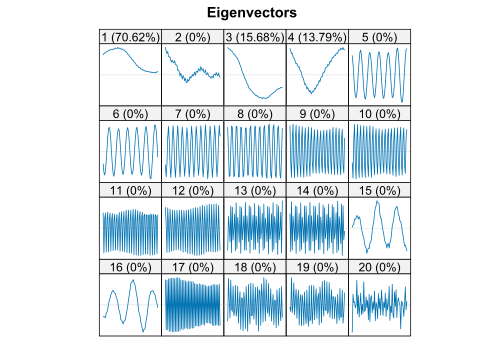
reos_debit <- reconstruct(eos_debit, list(Trend = 1:4, Seasonality = c(5:14, 17)))
plot(
reos_debit,
plot.method = "xyplot",
add.residuals = FALSE
)Сравним тренд с тренд и сезонность, полученных с помощью EOSSA и Basic SSA:
xyplot(
cbind(debit_log, r_debit$Trend, reos_debit$Trend),
superpose = TRUE,
lwd = c(1, 2, 2),
auto.key = list(text = c("Original", "SSA", "EOSSA"), space = "top")
)xyplot(
cbind(r_debit$Seasonality, reos_debit$Seasonality),
superpose = TRUE,
auto.key = list(text = c("SSA", "EOSSA"), space = "top")
)16 Classical seasonal decomposition и STL
Выкинем из ряда два периода, это понадобится нам в дальнейшем при проверке качества прогноза. Будем сравнивать результаты decompose и stl с результатом EOSSA.
debit_trunc <- window(debitcards, start = c(2000, 1), end = c(2010, 12))
s_debit <- ssa(debit_trunc, L = 48, svd.method = "svd", neig = 100)
plot(s_debit, "vectors", idx = 1:20)eos_debit <- eossa_new(s_debit, list(1:14), "distance")
plot(eos_debit, "vectors", idx = 1:20)## Warning in .contribution(x, idx, ...): Elementary matrices are not F-orthogonal
## (max F-cor is -0.00759). Contributions can be irrelevantreos_debit <- reconstruct(eos_debit, list(Trend = 1:3, Seasonality = 4:14))
plot(reos_debit, plot.method = "xyplot")
checkresiduals(reos_debit)##
## Ljung-Box test
##
## data: Residuals
## Q* = 107.03, df = 24, p-value = 1.853e-12
##
## Model df: 0. Total lags used: 24decompose_debit <- decompose(debit_trunc, type = "multiplicative")
autoplot(decompose_debit)checkresiduals(decompose_debit$random)##
## Ljung-Box test
##
## data: Residuals
## Q* = 42.434, df = 24, p-value = 0.01153
##
## Model df: 0. Total lags used: 24stl_debit <- stl(debit_trunc, s.window = 7, s.degree = 1, t.degree = 1, l.degree = 1)
autoplot(stl_debit)checkresiduals(stl_debit$time.series[, 3])##
## Ljung-Box test
##
## data: Residuals
## Q* = 81.819, df = 24, p-value = 3.114e-08
##
## Model df: 0. Total lags used: 24Гипотеза об белом шуме остатков отверглась для всех трех методов. Это говорит нам, что либо в ряде еще что-то осталось, либо остатки не описываются моделью белого шума. Сравним выделенные тренды:
autoplot(debitcards, ylab = "") +
autolayer(reos_debit$Trend, series = "EOSSA", lwd = 1) +
autolayer(decompose_debit$trend, series = "decompose", lwd = 1) +
autolayer(stl_debit$time.series[, 2], series = "STL", lwd = 1)17 SSA прогнозирование
Посмотрим на корни ЛРФ:
(par <- parestimate(eos_debit, list(1:14)))## period rate | Mod Arg | Re Im
## 2.995 0.008159 | 1.00819 2.10 | -0.50711 0.87138
## -2.995 0.008159 | 1.00819 -2.10 | -0.50711 -0.87138
## 6.024 0.007795 | 1.00783 1.04 | 0.50758 0.87068
## -6.024 0.007795 | 1.00783 -1.04 | 0.50758 -0.87068
## 112.486 0.007564 | 1.00759 0.06 | 1.00602 0.05625
## -112.486 0.007564 | 1.00759 -0.06 | 1.00602 -0.05625
## 12.069 0.007434 | 1.00746 0.52 | 0.87399 0.50112
## -12.069 0.007434 | 1.00746 -0.52 | 0.87399 -0.50112
## Inf 0.007079 | 1.00710 -0.00 | 1.00710 -0.00000
## 3.992 0.006548 | 1.00657 1.57 | -0.00314 1.00656
## -3.992 0.006548 | 1.00657 -1.57 | -0.00314 -1.00656
## 2.399 0.005881 | 1.00590 2.62 | -0.87155 0.50223
## -2.399 0.005881 | 1.00590 -2.62 | -0.87155 -0.50223
## -2.000 0.003466 | 1.00347 -3.14 | -1.00347 -0.00000Все корни по модулю больше \(1\), значит предсказание будет идти вверх. Убедимся в этом:
rfor_debit <- rforecast(eos_debit, list(1:14), len = 24)
vfor_debit <- vforecast(eos_debit, list(1:14), len = 24)
autoplot(tail(debitcards, 36), ylab = "") +
autolayer(rfor_debit, series = "rforecast", lwd = 1) +
autolayer(vfor_debit, series = "vforecast", lwd = 1, lty = "dashed")
Корень из среднеквадратичной оценки предсказания:
rmse <- function(y_true, y_pred) sqrt(mean((y_true - y_pred)^2))
rmse_debit <- tibble(
Method = c("SSA (recurrent)", "SSA (vector)"),
RMSE = c(rmse(debitcards, rfor_debit), rmse(debitcards, vfor_debit)),
)
rmse_debit |> arrange(RMSE)| Method | RMSE |
|---|---|
| SSA (recurrent) | 1436.799 |
| SSA (vector) | 2363.807 |
Теперь предскажем отдельно тренд:
rfor_debit_trend <- rforecast(eos_debit, list(1:3), len = 24)
vfor_debit_trend <- vforecast(eos_debit, list(1:3), len = 24)
autoplot(debitcards, ylab = "") +
autolayer(rfor_debit_trend, series = "rforecast", lwd = 1) +
autolayer(vfor_debit_trend, series = "vforecast", lwd = 1, lty = "dashed")Только сезонность:
rfor_debit_season <- rforecast(eos_debit, list(4:14), 24)
vfor_debit_season <- vforecast(eos_debit, list(4:14), 24)
autoplot(reos_debit$Seasonality, ylab = "") +
autolayer(rfor_debit_season, series = "rforecast", lwd = 1) +
autolayer(vfor_debit_season, series = "vforecast", lwd = 1, lty = "dashed")17.1 Бутстреп-доверительные/предсказательные интервалы
Поскольку рекурентный прогноз оказался точнее, будем использовать именно его. Доверительные интервалы:
fс_conf <- forecast(s_debit, list(1:14), 24, interval = "conf")
autoplot(fс_conf, flwd = 1, ylab = "") +
autolayer(debitcards, color = "black")
Предсказательные интервалы:
fс_pred <- forecast(s_debit, list(1:14), 24, interval = "pred")
autoplot(fс_pred, flwd = 1, ylab = "") +
autolayer(debitcards, color = "black")Предсказательные интервалы, как и ожидалось, шире, чем доверительные. Заметим, что предсказанные значения лежат ближе к нижней границе интервалов, а для доверительных интервалов некоторые значения лежат даже ниже ее. Можно делать прогноз тоже бутстрепом:
fc_bootstrap <-
forecast(s_debit, list(1:14), 24, interval = "pred", only.intervals = FALSE)
autoplot(fc_bootstrap, flwd = 1, ylab = "") +
autolayer(debitcards, color = "black")rmse_debit <- add_row(
rmse_debit,
Method = c("SSA (recurrent with bootstrap)"),
RMSE = rmse(debitcards, fc_bootstrap$mean)
)
rmse_debit |> arrange(RMSE)| Method | RMSE |
|---|---|
| SSA (recurrent) | 1436.799 |
| SSA (vector) | 2363.807 |
| SSA (recurrent with bootstrap) | 2845.190 |
18 Работа с пропусками
Займемся заполнением пропусков. Вырежем кусочек временного ряда:
debit_gapped <- debitcards
window(debit_gapped, start = c(2004, 1), end = c(2005, 12)) <- NA
debit_gap <- window(debitcards, start = c(2004, 1), end = c(2005, 12))
autoplot(debit_gapped, ylab = "")18.1 Sequential
s <- ssa(debit_gapped, 48, svd.method = "svd")
eos <- eossa_new(s, list(1:15), "distance", delta = 1e-5)
go <- gapfill(eos, list(1:2), "original", "sequential")
g <- gapfill(eos, list(1:2), "reconstructed", "sequential")
autoplot(debitcards, ylab = "", color = "grey", lwd = 1) +
autolayer(go, series = "original", lwd = 1) +
autolayer(g, series = "reconstructed", lwd = 1)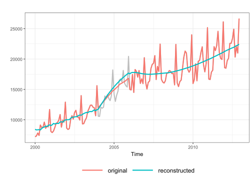
18.2 Simultaneous
go <- gapfill(eos, list(1:2), "original", "simultaneous")
g <- gapfill(eos, list(1:2), "reconstructed", "simultaneous")
autoplot(debitcards, ylab = "") +
autolayer(debit_gap, color = "grey", lwd = 1) +
autolayer(go, series = "original", lwd = 1) +
autolayer(g, series = "reconstructed", lwd = 1)18.3 Iterative
igo <- igapfill(eos, list(1:2), base = "original")
ig <- igapfill(eos, list(1:2), base = "reconstructed")
autoplot(debit_gap, ylab = "", color = "grey", lwd = 1) +
autolayer(igo, series = "original", lwd = 1) +
autolayer(ig, series = "reconstructed", lwd = 1)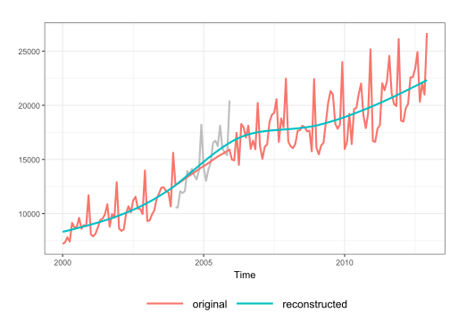
18.4 Сравнение gapfill и igapfill
18.4.1 Ряд без тренда
N <- length(signal2)
autoplot(signal2, ylab = "")# Setting up parallel computing
plan(multisession, workers = min(15, detectCores() - 1))
registerDoFuture()gapfill_errors <- function(gap_idx, signal, groups, M = 500, ...) {
mse <- foreach(i = 1:M) %dorng% {
x_gap <- signal + rnorm(N, ...)
x_gap[gap_idx] <- NA
s <- ssa(x_gap, 30, svd.method = "svd")
g_seq <- gapfill(s, groups, method = "sequential")
g_simult <- gapfill(s, groups, method = "simultaneous")
ig <- igapfill(s, groups, maxiter = 50)
mse.gapfill_seq <- mean((g_seq[gap_idx] - signal[gap_idx])^2)
mse.gapfill_simult <- mean((g_simult[gap_idx] - signal[gap_idx])^2)
mse.igapfill <- mean((ig[gap_idx] - signal[gap_idx])^2)
c(mse.gapfill_seq, mse.gapfill_simult, mse.igapfill)
}
mse <- do.call(rbind, mse) |> data.frame()
colnames(mse) <- c("gapfill_seq", "gapfill_simult", "igapfill")
tidyr::pivot_longer(mse, cols = 1:3)
}“Дырка” в середине:
set.seed(123)
mse_center1 <- gapfill_errors(45:54, signal2, list(1:2), sd = 0.5)
ggplot(mse_center1) + geom_boxplot(aes(name, value)) + xlab("") + ylab("MSE")“Дырка” в конце:
set.seed(123)
mse_end1 <- gapfill_errors(90:99, signal2, list(1:2), sd = 0.5)
ggplot(mse_end1) + geom_boxplot(aes(name, value)) + xlab("") + ylab("MSE")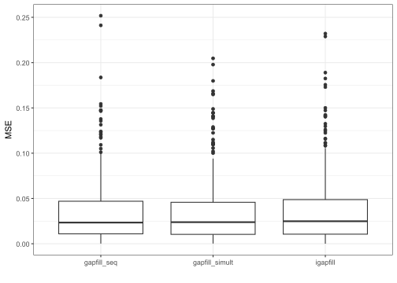
18.4.2 Ряд c трендом
Рассмотрим уже знакомый нам сигнал ранга \(7\):
autoplot(signal7, ylab = "", lwd = 1)“Дырка” в середине:
set.seed(123)
mse_center2 <- gapfill_errors(45:54, signal7, list(1:7), sd = 0.5)
ggplot(mse_center2) + geom_boxplot(aes(x = name, y = value)) + xlab("") + ylab("MSE")“Дырка” в конце:
set.seed(123)
mse_end2 <- gapfill_errors(90:99, signal7, list(1:7), sd = 0.5)
ggplot(mse_end2) + geom_boxplot(aes(x = name, y = value)) + xlab("") + ylab("MSE") + scale_y_log10()Посмотрим, как выглядит заполнение пропусков (которое, вообще говоря, в данном случае является прогнозом):
set.seed(123)
x2 <- x2_gap <- signal7 + rnorm(N, sd = 0.5)
x2_gap[90:99] <- NA
s <- ssa(x2_gap, 30, svd.method = "svd")
plot(s, "vectors", idx = 1:10)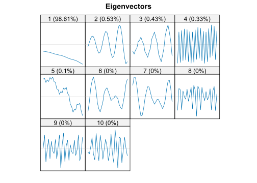
g_seq <- gapfill(s, list(1:7), method = "sequential")
g_simult <- gapfill(s, list(1:7), method = "simultaneous")
ig <- igapfill(s, list(1:7), maxiter = 50)
autoplot(x2, ylab = "", lwd = 1) +
autolayer(g_seq, series = "sequential", lwd = 1) +
autolayer(g_simult, series = "simultaneous", lwd = 1) +
autolayer(ig, series = "iterative", lwd = 1)
19 Процессы ARIMA
19.1 Модельные ряды
set.seed(123)
x <- arima.sim(list(ar = c(0.7, 0.1)), n = 10000)
ggtsdisplay(x, plot.type = "partial", lag.max = 50, main = "ARIMA(2, 0, 0)")
У PACF значимых лагов \(2\), что соответствует реальной модели.
(fit <- Arima(x, c(2, 0, 0), include.mean = FALSE))## Series: x
## ARIMA(2,0,0) with zero mean
##
## Coefficients:
## ar1 ar2
## 0.6841 0.1113
## s.e. 0.0099 0.0099
##
## sigma^2 = 0.9977: log likelihood = -14177.4
## AIC=28360.8 AICc=28360.8 BIC=28382.43Модель также правильно определяется автоматически:
(auto_fit <- auto.arima(x, stationary = TRUE, stepwise = FALSE))## Series: x
## ARIMA(2,0,0) with zero mean
##
## Coefficients:
## ar1 ar2
## 0.6841 0.1113
## s.e. 0.0099 0.0099
##
## sigma^2 = 0.9977: log likelihood = -14177.4
## AIC=28360.8 AICc=28360.8 BIC=28382.43set.seed(123)
x <- arima.sim(list(ar = c(0.5, -0.1), ma = c(0.9)), n = 10000)
ggtsdisplay(x, plot.type = "partial", lag.max = 50, main = "ARIMA(2, 0, 1)")
По ACF и PACF похоже на модель MA(3).
(fit <- Arima(x, c(0, 0, 3), include.mean = FALSE))## Series: x
## ARIMA(0,0,3) with zero mean
##
## Coefficients:
## ma1 ma2 ma3
## 1.3812 0.5699 0.1265
## s.e. 0.0098 0.0157 0.0098
##
## sigma^2 = 0.9982: log likelihood = -14180.03
## AIC=28368.05 AICc=28368.06 BIC=28396.89checkresiduals(fit, lag.max = 50)
##
## Ljung-Box test
##
## data: Residuals from ARIMA(0,0,3) with zero mean
## Q* = 6.0302, df = 7, p-value = 0.5362
##
## Model df: 3. Total lags used: 10Применим auto.arima:
auto_fit <- auto.arima(
x,
max.p = 3, max.q = 3,
stationary = TRUE,
trace = TRUE,
stepwise = FALSE,
approximation = FALSE,
allowmean = FALSE
)##
## ARIMA(0,0,0) with zero mean : 40222.91
## ARIMA(0,0,1) with zero mean : 30387.46
## ARIMA(0,0,2) with zero mean : 28527.76
## ARIMA(0,0,3) with zero mean : 28368.06
## ARIMA(1,0,0) with zero mean : 33604.95
## ARIMA(1,0,1) with zero mean : 28432.29
## ARIMA(1,0,2) with zero mean : 28368.35
## ARIMA(1,0,3) with zero mean : 28366.11
## ARIMA(2,0,0) with zero mean : 31199.61
## ARIMA(2,0,1) with zero mean : 28364.4
## ARIMA(2,0,2) with zero mean : 28366.32
## ARIMA(2,0,3) with zero mean : 28367.98
## ARIMA(3,0,0) with zero mean : 30162.9
## ARIMA(3,0,1) with zero mean : 28366.31
## ARIMA(3,0,2) with zero mean : 28368.29
##
##
##
## Best model: ARIMA(2,0,1) with zero meanauto_fit## Series: x
## ARIMA(2,0,1) with zero mean
##
## Coefficients:
## ar1 ar2 ma1
## 0.4844 -0.0908 0.8997
## s.e. 0.0109 0.0108 0.0048
##
## sigma^2 = 0.9978: log likelihood = -14178.2
## AIC=28364.4 AICc=28364.4 BIC=28393.24Модель подобралась верно, хотя значения IC для моделей довольно близки (\(28368.06\) и \(28364.4\)).
set.seed(123)
x <- arima.sim(list(ar = 0.4), n = 1000) + 0.1
x <- cumsum(x)
ggtsdisplay(x, "partial", main = "ARIMA(1, 1, 0) with drift")Очевидно, что ряд нестационарный. Проверим ряд на наличие единичного корня:
adf.test(x)##
## Augmented Dickey-Fuller Test
##
## data: x
## Dickey-Fuller = -2.6459, Lag order = 9, p-value = 0.3049
## alternative hypothesis: stationaryПродифференцируем ряд:
ggtsdisplay(diff(x), "partial")Похоже на AR(1) процесс. Подберем лучшую модель:
(auto_fit <- auto.arima(x, stepwise = FALSE, approximation = FALSE))## Series: x
## ARIMA(1,1,0) with drift
##
## Coefficients:
## ar1 drift
## 0.3620 0.1218
## s.e. 0.0296 0.0493
##
## sigma^2 = 0.9919: log likelihood = -1412.51
## AIC=2831.02 AICc=2831.04 BIC=2845.74checkresiduals(auto_fit)##
## Ljung-Box test
##
## data: Residuals from ARIMA(1,1,0) with drift
## Q* = 3.0964, df = 9, p-value = 0.9603
##
## Model df: 1. Total lags used: 10Сделаем прогноз:
autoplot(forecast(auto_fit), include = 200, ylab = "")ts1 <- as.ts(read.csv("./data/ts1.txt", sep=""))
ggtsdisplay(ts1, plot.type = "partial", lag.max = 50)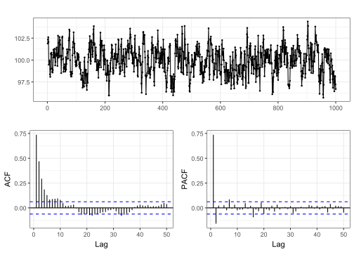
PACF обрывается после лага \(2\), а ACF экспоненциально затухает. Поэтому выберем модель ARIMA(2, 0, 0).
(fit <- Arima(ts1, c(2, 0, 0)))## Series: ts1
## ARIMA(2,0,0) with non-zero mean
##
## Coefficients:
## ar1 ar2 mean
## 0.8565 -0.1585 99.9187
## s.e. 0.0312 0.0313 0.1083
##
## sigma^2 = 1.076: log likelihood = -1454.25
## AIC=2916.5 AICc=2916.54 BIC=2936.13checkresiduals(fit, lag.max = 50)##
## Ljung-Box test
##
## data: Residuals from ARIMA(2,0,0) with non-zero mean
## Q* = 10.412, df = 8, p-value = 0.2373
##
## Model df: 2. Total lags used: 10Теперь автоматически подберем модель:
auto_fit <- auto.arima(
ts1,
max.p = 3, max.q = 3,
stationary = TRUE,
trace = TRUE,
stepwise = FALSE,
approximation = FALSE
)##
## ARIMA(0,0,0) with zero mean : 12048.89
## ARIMA(0,0,0) with non-zero mean : 3725.26
## ARIMA(0,0,1) with zero mean : Inf
## ARIMA(0,0,1) with non-zero mean : 3137.908
## ARIMA(0,0,2) with zero mean : 9457.261
## ARIMA(0,0,2) with non-zero mean : 2992.972
## ARIMA(0,0,3) with zero mean : 8347.406
## ARIMA(0,0,3) with non-zero mean : 2935.968
## ARIMA(1,0,0) with zero mean : Inf
## ARIMA(1,0,0) with non-zero mean : 2939.839
## ARIMA(1,0,1) with zero mean : Inf
## ARIMA(1,0,1) with non-zero mean : 2916.03
## ARIMA(1,0,2) with zero mean : Inf
## ARIMA(1,0,2) with non-zero mean : 2917.988
## ARIMA(1,0,3) with zero mean : Inf
## ARIMA(1,0,3) with non-zero mean : 2919.812
## ARIMA(2,0,0) with zero mean : Inf
## ARIMA(2,0,0) with non-zero mean : 2916.543
## ARIMA(2,0,1) with zero mean : Inf
## ARIMA(2,0,1) with non-zero mean : 2917.977
## ARIMA(2,0,2) with zero mean : Inf
## ARIMA(2,0,2) with non-zero mean : 2908.231
## ARIMA(2,0,3) with zero mean : Inf
## ARIMA(2,0,3) with non-zero mean : 2908.491
## ARIMA(3,0,0) with zero mean : Inf
## ARIMA(3,0,0) with non-zero mean : 2917.992
## ARIMA(3,0,1) with zero mean : Inf
## ARIMA(3,0,1) with non-zero mean : 2907.243
## ARIMA(3,0,2) with zero mean : Inf
## ARIMA(3,0,2) with non-zero mean : 2909.217
##
##
##
## Best model: ARIMA(3,0,1) with non-zero meanauto_fit## Series: ts1
## ARIMA(3,0,1) with non-zero mean
##
## Coefficients:
## ar1 ar2 ar3 ma1 mean
## -0.0917 0.6303 -0.1186 0.9664 99.9183
## s.e. 0.0375 0.0337 0.0333 0.0197 0.1101
##
## sigma^2 = 1.063: log likelihood = -1447.58
## AIC=2907.16 AICc=2907.24 BIC=2936.61checkresiduals(auto_fit, lag.max = 50)##
## Ljung-Box test
##
## data: Residuals from ARIMA(3,0,1) with non-zero mean
## Q* = 6.1555, df = 6, p-value = 0.406
##
## Model df: 4. Total lags used: 10По IC модель ARIMA(2, 0, 0) заметно хуже ARIMA(3, 0, 1). На самом деле, истинная модель ARIMA(1, 0, 1), которая по IC близка к ARIMA(2, 0, 0).
ts5 <- as.ts(read.csv("./data/ts5.txt", sep=""))
ggtsdisplay(ts5, plot.type = "partial", lag.max = 50)Похоже на модель ARIMA(3, 0, 2).
(fit <- Arima(ts5, c(3, 0, 2), include.mean = FALSE))## Series: ts5
## ARIMA(3,0,2) with zero mean
##
## Coefficients:
## ar1 ar2 ar3 ma1 ma2
## 0.1413 -0.2796 0.1223 0.1686 0.1740
## s.e. 0.3007 0.1123 0.0415 0.3018 0.1553
##
## sigma^2 = 0.3963: log likelihood = -1909.77
## AIC=3831.54 AICc=3831.58 BIC=3865.14checkresiduals(fit, lag.max = 50)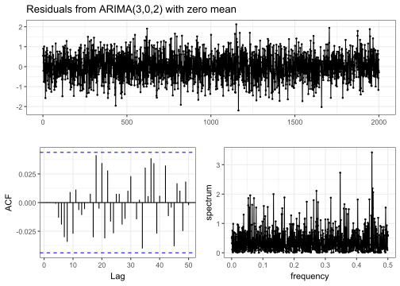
##
## Ljung-Box test
##
## data: Residuals from ARIMA(3,0,2) with zero mean
## Q* = 6.9261, df = 5, p-value = 0.2262
##
## Model df: 5. Total lags used: 10auto_fit <- auto.arima(
ts5,
max.p = 3, max.q = 2,
stationary = TRUE,
stepwise = FALSE,
trace = TRUE,
approximation = FALSE
)##
## ARIMA(0,0,0) with zero mean : 4020.233
## ARIMA(0,0,0) with non-zero mean : 4022.044
## ARIMA(0,0,1) with zero mean : 3839.549
## ARIMA(0,0,1) with non-zero mean : 3841.435
## ARIMA(0,0,2) with zero mean : 3833.206
## ARIMA(0,0,2) with non-zero mean : 3835.076
## ARIMA(1,0,0) with zero mean : 3878.979
## ARIMA(1,0,0) with non-zero mean : 3880.873
## ARIMA(1,0,1) with zero mean : 3833.555
## ARIMA(1,0,1) with non-zero mean : 3835.429
## ARIMA(1,0,2) with zero mean : 3835.177
## ARIMA(1,0,2) with non-zero mean : 3837.05
## ARIMA(2,0,0) with zero mean : 3846.239
## ARIMA(2,0,0) with non-zero mean : 3848.097
## ARIMA(2,0,1) with zero mean : 3834.8
## ARIMA(2,0,1) with non-zero mean : 3836.671
## ARIMA(2,0,2) with zero mean : 3834.094
## ARIMA(2,0,2) with non-zero mean : 3835.972
## ARIMA(3,0,0) with zero mean : 3828.799
## ARIMA(3,0,0) with non-zero mean : 3830.688
## ARIMA(3,0,1) with zero mean : 3830.809
## ARIMA(3,0,1) with non-zero mean : 3832.701
## ARIMA(3,0,2) with zero mean : 3831.58
## ARIMA(3,0,2) with non-zero mean : 3833.471
##
##
##
## Best model: ARIMA(3,0,0) with zero meanauto_fit## Series: ts5
## ARIMA(3,0,0) with zero mean
##
## Coefficients:
## ar1 ar2 ar3
## 0.3103 -0.1605 0.0984
## s.e. 0.0222 0.0230 0.0223
##
## sigma^2 = 0.3961: log likelihood = -1910.39
## AIC=3828.78 AICc=3828.8 BIC=3851.18checkresiduals(auto_fit, lag.max = 50)##
## Ljung-Box test
##
## data: Residuals from ARIMA(3,0,0) with zero mean
## Q* = 8.1128, df = 7, p-value = 0.3227
##
## Model df: 3. Total lags used: 10Наилучшей моделью оказалась ARIMA(3, 0, 0), которая и является истинной.
19.2 Реальные данные
Автоматически подберем модель ARIMA для остатков после выделения тренда и сезонности с помощью SSA.
19.2.1 Уровень воды реки Нил
rNile <- resid(r_NileMin)
ggtsdisplay(rNile, plot.type = "partial", lag.max = 50)rNile_train <- head(rNile, -10)
rNile_test <- tail(rNile, 10)
arima_Nile <- auto.arima(
rNile_train,
stationary = TRUE,
stepwise = FALSE,
approximation = FALSE
)
arima_Nile## Series: rNile_train
## ARIMA(1,0,2) with zero mean
##
## Coefficients:
## ar1 ma1 ma2
## 0.7333 -0.3581 -0.0973
## s.e. 0.0968 0.1064 0.0601
##
## sigma^2 = 4682: log likelihood = -3684.56
## AIC=7377.11 AICc=7377.17 BIC=7395.04checkresiduals(arima_Nile, plot.type = "hist", lag.max = 50)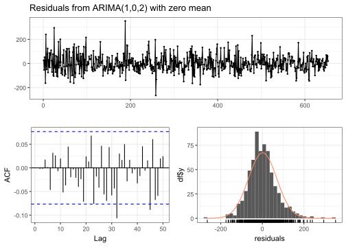
##
## Ljung-Box test
##
## data: Residuals from ARIMA(1,0,2) with zero mean
## Q* = 3.0599, df = 7, p-value = 0.8794
##
## Model df: 3. Total lags used: 10Нет основания отвергать гипотезу о белом шуме, поэтому сделаем прогноз. Поскольку остатки не похожи на нормальное распределение, предсказательные интервалы будем вычислять с помощью бутстрепа:
autoplot(forecast(arima_Nile, bootstrap = TRUE), include = 200, ylab = "") +
autolayer(rNile_test, colour = FALSE)19.2.2 Дебетовые карты
rdebit <- resid(reos_debit)
ggtsdisplay(rdebit, plot.type = "partial", lag.max = 50)arima_debit <- auto.arima(
rdebit,
stationary = TRUE,
seasonal = FALSE,
stepwise = FALSE,
approximation = FALSE
)
arima_debit## Series: rdebit
## ARIMA(0,0,3) with zero mean
##
## Coefficients:
## ma1 ma2 ma3
## -0.0411 0.0953 0.3832
## s.e. 0.0871 0.0705 0.1096
##
## sigma^2 = 225793: log likelihood = -999.65
## AIC=2007.3 AICc=2007.61 BIC=2018.83checkresiduals(arima_debit, lag.max = 50)##
## Ljung-Box test
##
## data: Residuals from ARIMA(0,0,3) with zero mean
## Q* = 56.817, df = 21, p-value = 3.824e-05
##
## Model df: 3. Total lags used: 24Нулевая гипотеза о белом шуме отверглась, видимо, в ряде осталась часть сезонности. Предсказывать неверную модель смысла нет.
20 Seasonal ARIMA
Подберем сезонную модель ARIMA для данных debitcards без двух периодов:
sarima_debit <- auto.arima(
debit_trunc,
stepwise = FALSE,
lambda = "auto"
)
sarima_debit## Series: debit_trunc
## ARIMA(2,1,0)(0,1,1)[12]
## Box Cox transformation: lambda= 0.2915094
##
## Coefficients:
## ar1 ar2 sma1
## -0.7410 -0.4557 -0.7704
## s.e. 0.0825 0.0835 0.1116
##
## sigma^2 = 0.676: log likelihood = -149.77
## AIC=307.55 AICc=307.9 BIC=318.66Проверим остатки:
checkresiduals(sarima_debit, plot.type = "hist", lag.max = 50)##
## Ljung-Box test
##
## data: Residuals from ARIMA(2,1,0)(0,1,1)[12]
## Q* = 26.381, df = 21, p-value = 0.1923
##
## Model df: 3. Total lags used: 24Теперь гипотеза не отвергается, но остатки не распределены нормально. Посмотрим на прогноз с бутстреп-интервалами:
for_sarima <- forecast(sarima_debit, 24, bootstrap = TRUE)
autoplot(for_sarima, flwd = 1, ylab = "") +
autolayer(debitcards, color = "black")
Сравним его с истинными значениями и с SSA прогнозом:
autoplot(tail(debitcards, 36), ylab = "") +
autolayer(for_sarima$mean, series = "SARIMA", lwd = 1) +
autolayer(rfor_debit, series = "SSA", lwd = 1, lty = "dashed")Ошибки предсказаний:
rmse_debit <- rmse_debit |>
add_row(Method = "SARIMA", RMSE = rmse(debitcards, for_sarima$mean))
rmse_debit |> arrange(RMSE)| Method | RMSE |
|---|---|
| SARIMA | 779.4278 |
| SSA (recurrent) | 1436.7990 |
| SSA (vector) | 2363.8067 |
| SSA (recurrent with bootstrap) | 2845.1905 |
21 Обнаружение разладки
hfunc <- function(x, B = N %/% 4, T = N %/% 4, L = B %/% 2, neig = 10) {
h <- hmatr(x, B = B, T = T, L = L, neig = neig)
hf_diag <- c(rep(NA, T + B), h[row(h) == col(h) + B])
hf_row <- c(rep(NA, T), h[, 1])
hf <-
data.frame(Time = time(x), diagonal = hf_diag, row = hf_row) |>
tidyr::pivot_longer(2:3)
p <- ggplot(hf, aes(x = Time, y = value)) +
geom_line(aes(linetype = name, lwd = name), na.rm = TRUE) +
scale_linewidth_manual(values = c("diagonal" = 0.5, "row" = 1)) +
scale_linetype_manual(values = c("diagonal" = "solid", "row" = "dashed")) +
ylab("heterogeneity") +
theme_bw() +
theme(legend.position = "none")
list(hmatr = h, plot = p)
}21.1 Модельные ряды
Изменение частоты:
N <- 200
Q <- 100
x <- ts(numeric(N))
x[1:Q] <- sin(2 * pi * 0.1 * (1:Q))
x[(Q + 1):N] <- sin(2 * pi * 0.15 * ((Q + 1):N))
hf <- hfunc(x, neig = 2)
ggarrange(autoplot(x, ylab = ""), hf$plot, nrow = 2)
Сплошной линией нарисована диагональная функция разладки, а пунктирной — строковая. Матрица разладки:
pal <- rev(hcl.colors(256, "Grays"))
plot(hf$hmatr, col = pal)Увеличение ранга сигнала:
x[1:Q] <- sin(2 * pi * 0.1 * (1:Q))
x[(Q + 1):N] <-
0.8 * sin(2 * pi * 0.1 * ((Q + 1):N)) + 0.3 * sin(2 * pi * 0.2 * ((Q + 1):N))
hf <- hfunc(x, L = 20, neig = 2)
ggarrange(autoplot(x, ylab = ""), hf$plot, nrow = 2)
plot(hf$hmatr, col = pal)Уменьшение ранга сигнала:
x <- ts(rev(x))
hf <- hfunc(x, L = 20, neig = 4)
ggarrange(autoplot(x, ylab = ""), hf$plot, nrow = 2)
plot(hf$hmatr, col = pal)Функция модуля:
x[1:N] <- abs((1:N) - Q)
hf <- hfunc(x, B = 40, T = 40, L = 20, neig = 2)
ggarrange(autoplot(x, ylab = ""), hf$plot, nrow = 2)
plot(hf$hmatr, col = pal)
21.2 Реальные ряды
21.2.1 Дебетовые карты
Будем искать разладку в тренде, сперва удалим сезонность:
s <- ssa(debitcards, 72, svd.method = "svd")
eos <- eossa_new(s, list(1:14), "distance")
r_eos <- reconstruct(eos, list(4:14))
(p1 <- autoplot(resid(r_eos), ylab = ""))plot(ssa(resid(r_eos)[1:48], L = 24), "vectors")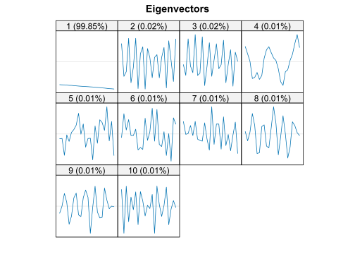
Будем брать первую компоненту разложения.
hf <- hfunc(resid(r_eos), B = 48, T = 48, L = 24, neig = 1)
ggarrange(p1, hf$plot, nrow = 2)Функции разладки заметила изменение структуры ряда с начала \(2005\) года и с середины \(2008\) года, что видно по ряду. Матрица разладки:
plot(hf$hmatr, col = pal)
21.2.2 Индекс Dow-Jones
data("dj", package = "fma")
(p1 <- autoplot(dj, ylab = ""))plot(ssa(dj[1:40], 20), "vector")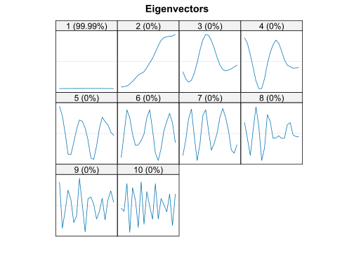
Будем описывать тренд двумя компонентами.
hf <- hfunc(dj, B = 40, T = 40, L = 20, neig = 2)
ggarrange(p1, hf$plot, nrow = 2)
Ряд имеет по крайней мере одну разладку в среднем, функции разладки это изменение и обнаружили. Матрица разладки:
plot(hf$hmatr, col = pal)
22 Экспоненциальное сглаживание
22.1 Simple exponential smoothing
fit <- ses(debitcards)
autoplot(forecast(fit), ylab = "") + autolayer(fit$fitted, color ="#D55E00")22.2 Holt’s method
fit <- holt(debitcards)
autoplot(fit, ylab = "") + autolayer(fit$fitted, color ="#D55E00")Можно сделать тренд затухающим:
fit_damped <- holt(debitcards, damped = TRUE)
autoplot(forecast(fit_damped), ylab = "") + autolayer(fit_damped$fitted, color ="#D55E00")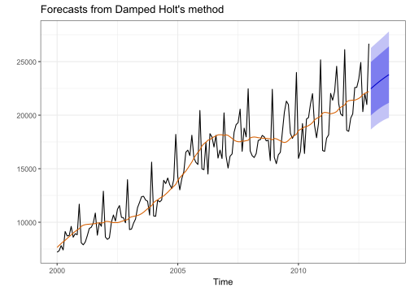
22.3 Holt-Winters’ method
fit <- hw(debitcards, seasonal = "multiplicative")
autoplot(forecast(fit), ylab = "") + autolayer(fit$fitted, color ="#D55E00")22.4 Выбор модели
Автоматически подберем модель для ряда без двух периодов:
(ets_debit <- ets(debit_trunc))## ETS(M,A,M)
##
## Call:
## ets(y = debit_trunc)
##
## Smoothing parameters:
## alpha = 0.2375
## beta = 0.0122
## gamma = 1e-04
##
## Initial states:
## l = 8094.1229
## b = 98.3288
## s = 1.2677 0.9566 0.99 0.9719 1.0937 1.0566
## 1.0423 1.0182 0.9179 0.9269 0.8629 0.8952
##
## sigma: 0.049
##
## AIC AICc BIC
## 2383.313 2388.682 2432.321Выбралась модель ETS(M, A, M), то есть модель с мультипликативными ошибками и сезонностью и с аддитивным трендом. Посмотрим на остатки:
checkresiduals(ets_debit, plot.type = "hist", lag.max = 50)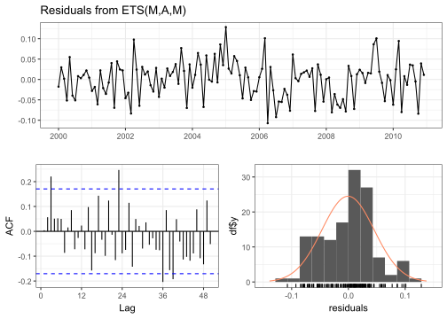
##
## Ljung-Box test
##
## data: Residuals from ETS(M,A,M)
## Q* = 39.104, df = 24, p-value = 0.02663
##
## Model df: 0. Total lags used: 24При уровне значимости \(\alpha=0.01\) нулевая гипотеза не отвергается, построим на предсказания:
fc_ets <- forecast(ets_debit, h = 24, bootstrap = TRUE)
autoplot(fc_ets, flwd = 1, ylab = "") + autolayer(debitcards, color = "black")
Сравним полученные прогнозы с прогнозами других методов, рассмотренных ранее:
ets_debit_damped <- ets(debit_trunc, damped = TRUE)
fc_ets_damped <- forecast(ets_debit_damped, h = 24, PI = FALSE)
autoplot(tail(debitcards, 36), ylab = "") +
autolayer(fc_ets$mean, series = "ETS", lwd = 1) +
autolayer(fc_ets_damped$mean, series = "ETS (damped)", lwd = 1) +
autolayer(for_sarima$mean, series = "SARIMA", lwd = 1, lty = "dashed") +
autolayer(rfor_debit, series = "SSA", lwd = 1, lty = "dashed")Ошибки предсказаний:
rmse_debit <- add_row(
rmse_debit,
Method = c("ETS", "ETS (damped)"),
RMSE = c(rmse(debitcards, fc_ets$mean), rmse(debitcards, fc_ets_damped$mean))
)
rmse_debit |> arrange(RMSE)| Method | RMSE |
|---|---|
| SARIMA | 779.4278 |
| ETS | 1060.6393 |
| ETS (damped) | 1134.1526 |
| SSA (recurrent) | 1436.7990 |
| SSA (vector) | 2363.8067 |
| SSA (recurrent with bootstrap) | 2845.1905 |
ETS оказалась по точности между SARIMA и SSA, причем модель с затухающим трендом оказалась хуже, но разница небольшая.
23 MSSA
23.1 Сравнение с SSA
Будем рассматривать только модельные ряды. Проверим, что если каналы имеют одинаковую структуру, то MSSA точнее выделяется сигнал, чем SSA. Шум будем рассматривать для простоты белый.
mssa_errors <- function(signal,
L,
groups_mssa,
groups_ssa = groups_mssa,
M = 500,
...) {
N <- nrow(signal)
mse <- foreach(i = 1:M) %dorng% {
f <- signal + cbind(rnorm(N, ...), rnorm(N, ...))
f1 <- f[, 1]
f2 <- f[, 2]
s <- ssa(f, L, kind = "mssa", svd.method = "svd")
s1 <- ssa(f1, L, kind = "1d-ssa", svd.method = "svd")
s2 <- ssa(f2, L, kind = "1d-ssa", svd.method = "svd")
r <- reconstruct(s, groups_mssa)[[1]]
r1 <- reconstruct(s1, groups_ssa)[[1]]
r2 <- reconstruct(s2, groups_ssa)[[1]]
mse1 <- mean((r1 - signal[, 1])^2)
mse2 <- mean((r2 - signal[, 2])^2)
c(mean((r - signal)^2), (mse1 + mse2) / 2)
}
mse <- do.call(rbind, mse) |> data.frame(L = rep(L, M))
colnames(mse) <- c("mssa", "ssa", "L")
mse
}Будем рассмотривать ряды длинны \(N=100\) и \(L\in\{10, 20, 50, 80, 90\}\).
N <- 100
Ls <- c(10, 20, 50, 80, 90)23.2 Одинаковая структура
Возьмем косинусы с одинаковой частотой.
signal_channel <- em_harmonic(N, 1 / 12)
signal1 <- cbind(2 * signal_channel, 1.5 * signal_channel, deparse.level = 0)
autoplot(ts(signal1), facets = TRUE, ylab = "")x <- signal1 + rnorm(N)
plot(ssa(x, kind = "mssa"), "vectors")Ранг равен \(2\), как и ранг каждого канала.
set.seed(123)
mse1 <- lapply(Ls, function(L) mssa_errors(signal1, L, list(1:2))) |>
bind_rows() |>
pivot_longer(1:2) |>
mutate(L = factor(L, levels = Ls))
ggplot(mse1, aes(L, value, fill = name)) + geom_boxplot() + ylab("MSE")23.3 Разная структура
В качестве сигнала рассмотрим экспоненты с разными показателями.
signal2 <- cbind(em_harmonic(N, 0, a = 0.05), em_harmonic(N, 0, a = 0.025))
autoplot(ts(signal2), facets = TRUE, ylab = "")x <- signal2 + rnorm(N)
plot(ssa(x, kind = "mssa"), "vectors")В случае разной структуры ранг равен сумме рангов каналов.
set.seed(123)
mse2 <- lapply(Ls, function(L) mssa_errors(signal2, L, list(1:2), list(1))) |>
bind_rows() |>
pivot_longer(1:2) |>
mutate(L = factor(L, levels = Ls))
ggplot(mse2, aes(L, value, fill = name)) + geom_boxplot() + ylab("MSE")23.4 Поддерживающий ряд
Пусть у нас есть два ряда. Второй ряд называют поддерживающим, если при его учитывании ошибки восстановления сигнала первого ряда становятся меньше. Посмотрим, как от уровня шума во втором ряде зависит, является ли он поддерживающим. Поскольку в предыдущем разделе мы убедились, что MSSA точнее, когда каналы имеют одинаковую структуру, будем рассматривать имеенно этот случай.
support_errors <- function(signal, L, groups, sds, M = 500) {
N <- nrow(signal)
mse <- foreach(i = 1:M) %dorng% {
noise1 <- rnorm(N)
noise2 <- rnorm(N)
f <- lapply(sds, function(sd) signal + cbind(noise1, sd * noise2))
f1 <- f[[1]][, 1]
sl <- lapply(
seq_along(sds),
function(i) ssa(f[[i]], L, kind = "mssa", svd.method = "svd")
)
s1 <- ssa(f1, L, kind = "1d-ssa", svd.method = "svd")
rl <- lapply(
seq_along(sds),
function(i) reconstruct(sl[[i]], groups)[[1]][, 1]
)
r1 <- reconstruct(s1, groups)[[1]]
mse_mssa <- sapply(
seq_along(sds),
function(i) mean((rl[[i]] - signal[, 1])^2)
)
mse_ssa <- mean((r1 - signal[, 1])^2)
c(mse_mssa, mse_ssa)
}
mse <- do.call(rbind, mse) |> data.frame()
colnames(mse) <- c(paste0("sigma=", sds), "ssa")
mse
}Зафиксируем \(L=50\). Рассмотрим стандартное отклонение шума \(\sigma=1\) в первом ряде и \(\sigma\in[1, 5]\) во втором.
L <- 50
sds <- seq(1, 5, 0.1)
set.seed(123)
mse_support <- support_errors(signal1, L, list(1:2), sds)
data.frame(sigma = sds, MSE = colMeans(mse_support |> select(-ssa))) |>
ggplot(aes(sigma, MSE)) +
geom_line() +
geom_hline(yintercept = mean(mse_support$ssa), lty = "dashed") +
scale_y_log10()Пунктиром обозначена ошибка восстановления сигнала методом SSA. Как видим, начиная с \(\sigma=2.2\), второй ряд перестает быть поддерживающим.